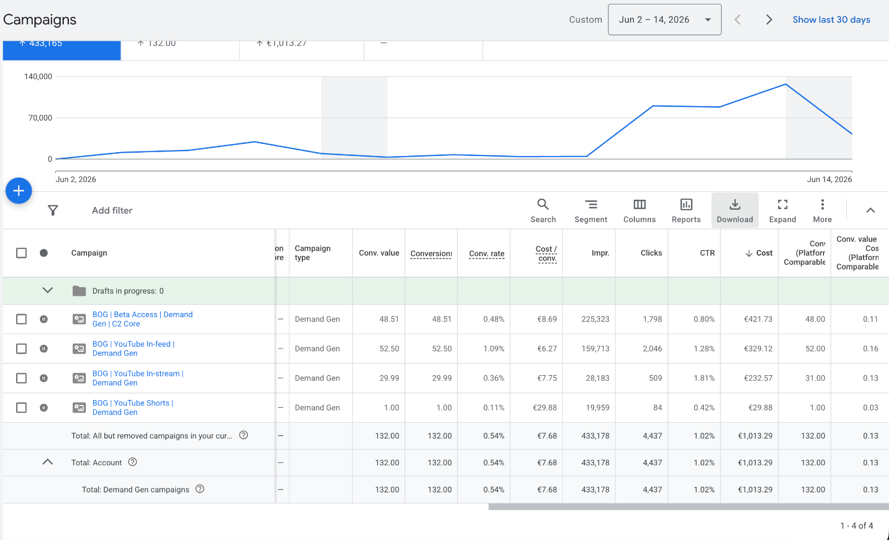
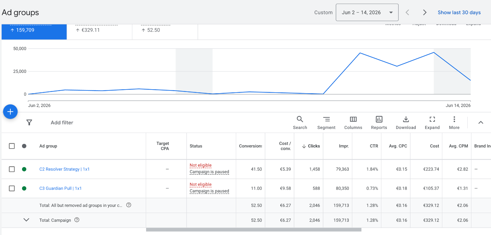
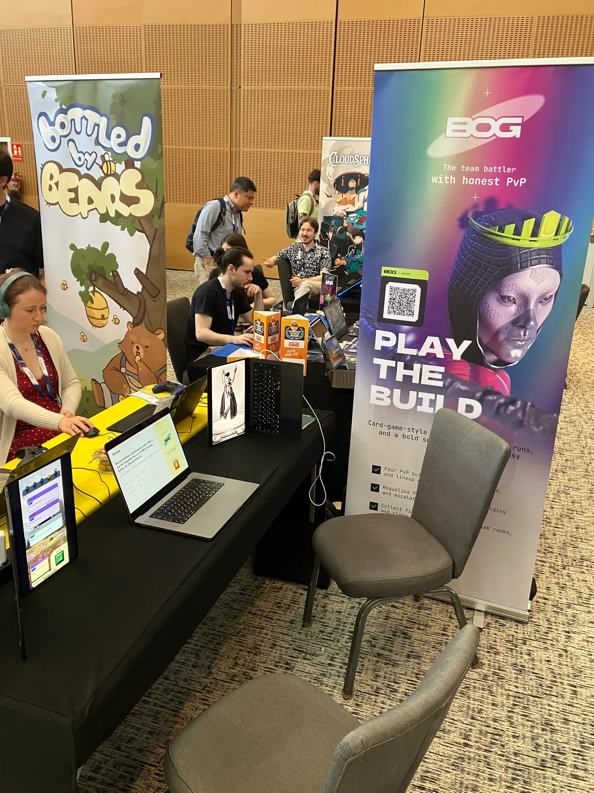
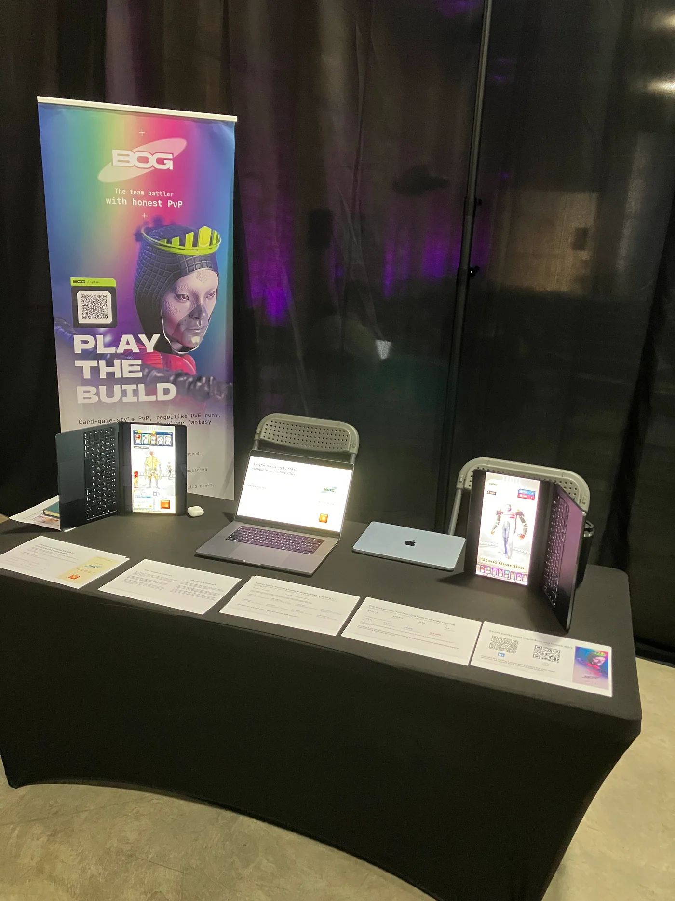

The demo has met
real players.
We ran a paid campaign, took BOG to Barcelona and Limassol, and recorded how people played the demo. Here is what we learned when our game met its first players.
Download intent · not CPI
and our wider playtests
35 players · external demo
Would strangers want to play?
We wanted to know whether BOG could attract people who had never heard of us. In June, we ran a paid campaign using our first creatives and an early demo. We were looking for a concrete response: would someone see the game and take a step towards getting it?
We ran four Google Ads Demand Gen campaigns, including YouTube In-feed, In-stream and Shorts. Between 2 and 14 June 2026, we spent €1,013.29 and recorded 433,178 impressions, 4,437 clicks and 132 tracked GET actions.
- Campaign spend
- €1,013.29
- Tracked GET actions
- 132
- Blended cost per GET
- €7.68
433,178 impressions · 4,437 clicks · GET measures download intent
We tracked GET as the action expressing download intent, before installation or play. The blended cost was €7.68 per GET. It tells us what that expression of interest cost; it is not a verified install cost.
| Campaign | Spend | GET actions | Cost / GET |
|---|---|---|---|
| Beta Access · C2 Core | €421.73 | 48.51 | €8.69 |
| YouTube In-feed | €329.12 | 52.50 | €6.27 |
| YouTube In-stream | €232.57 | 29.99 | €7.75 |
| YouTube Shorts | €29.88 | 1.00 | €29.88 |
| Full test | €1,013.29 | 132.00 | €7.68 |
YouTube In-feed had our lowest campaign cost per GET, at €6.27. We achieved these results on the first pass, before a sustained cycle of creative iteration or campaign optimisation.

Two ways to introduce the same game.
Inside the In-feed campaign, two creative directions received almost the same number of impressions and produced different responses. C2, “Resolver Strategy”, generated 41.5 attributed GET conversions at €5.39 each. C3, “Guardian Pull”, generated 11 at €9.58.
- GET conversions
- 41.50
- Click-through rate
- 1.84%
- Impressions
- 79,363
- Spend
- €223.74
- GET conversions
- 11.00
- Click-through rate
- 0.73%
- Impressions
- 80,350
- Spend
- €105.37
Observed ad-group comparison · same campaign format · not a randomised A/B test
C2’s observed cost per GET was about 44% lower, with a click-through rate about 2.5 times higher. Resolver Strategy attracted more clicks and download-intent actions from a similar number of impressions. The two creative directions recorded substantially different responses within the same campaign.
Here are the vertical versions of those two campaign creatives. The figures above refer to their 1:1 In-feed versions.
 Watch creative
Watch creative Watch creative
Watch creativeView the original ad-group results

Eight people made it all the way.
Getting into BOG took more than tapping an ad. We were sharing a beta demo through TestFlight. After GET, visitors reached our page, read about the demo, left an email, opened the access link, installed TestFlight if needed, installed BOG and launched it.
- 132Tracked GET actions
- 13Email sign-ups
- 8Confirmed demo players
Ad → GET → Demo page → Email → TestFlight access → TestFlight installation → BOG installation → Play
We received 13 email sign-ups, and eight of those people reached the game and played. That is roughly 6.1% compared with the 132 tracked GET actions. The counts compare confirmed players with attributed ad conversions, rather than a fully deduplicated user funnel.
We joked that getting into BOG took more effort than simply paying for something. Every extra step gave people a reason to leave. Eight strangers went through the whole process to try our unfinished demo.
Once inside, they made sense of the core decisions without a conventional step-by-step tutorial. We did not see basic confusion about what to do. These players had come from ads, with none of us beside them to explain the rules.
Two events, two different audiences.
We also brought BOG to Pocket Gamer Connects Barcelona and StartupCon Europe in Limassol. Across our demonstrations and playtests, more than 100 people played the game. More than 40 installed the demo on their own devices through QR access.


Pocket Gamer Connects Barcelona is a major games industry event. We put BOG in the hands of game designers, developers, artists and other industry professionals, and received strong feedback on the mechanics and the mobile presentation. A recurring response after playing was to suggest what else we could add: new features, combinations and situations for the game.
StartupCon in Limassol was a different setting: a broader startup event, with an audience beyond the games industry. It was especially interesting to watch people who enjoy games sit down with BOG, work through its decisions and respond positively. We heard encouraging feedback from game enthusiasts as well as professionals.
Some of those conversations continued after the events. Oscar Clark arranged a follow-up after seeing BOG in Barcelona. A Plug and Play contact we met in Limassol installed the build, initiated a meeting and reviewed our materials.
One duel, then another.
We had telemetry in the demo, so we could look at what people did alongside what they told us. With little content beyond the mechanics, we were particularly interested in whether they would play the duel loop again.
Our analysis covers 35 players on the external demo build. Twenty-six completed at least two duels. Fifteen played five or more, and nine played ten or more: 43% and 26% of the sample, respectively.
- 2+ match results
- 74.3%26 / 35
- 5+ match results
- 42.9%15 / 35
- 10+ match results
- 25.7%9 / 35
Cumulative thresholds based on match-result events. Repeated play, not day-by-day retention.
People were repeating the core decisions while the wider progression and content were still incomplete. The demo already gave them enough to play several matches and see their results.
About these match counts
We counted PvPMatchResult events from the external demo. Duels in this build are played against bots. The thresholds are cumulative: the nine players with ten or more results also belong to the five-or-more group. These figures describe repeated play, not D1/D7 retention.
The percentages describe all 35 players in this sample, rather than a separate breakdown of the eight players acquired through advertising.
What sits behind the numbers.
We saw interest turn into action in several settings: people responded to our ads, completed the beta-access route, played at our stands and installed the game on their own phones. In the demo itself, we recorded repeated duels and heard ideas for what players wanted to do next.
All of this happened with an early build centred on the mechanics. We could already watch people discover the game, understand its decisions and keep playing.